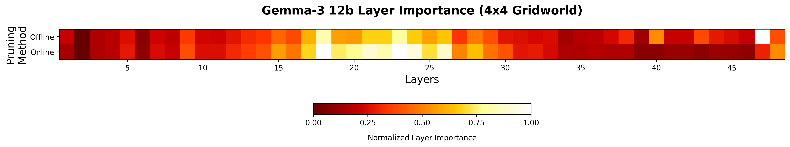
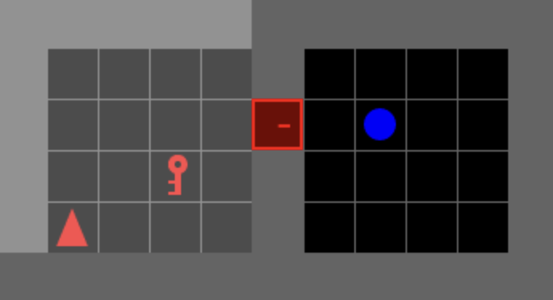
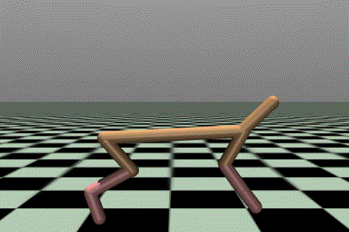
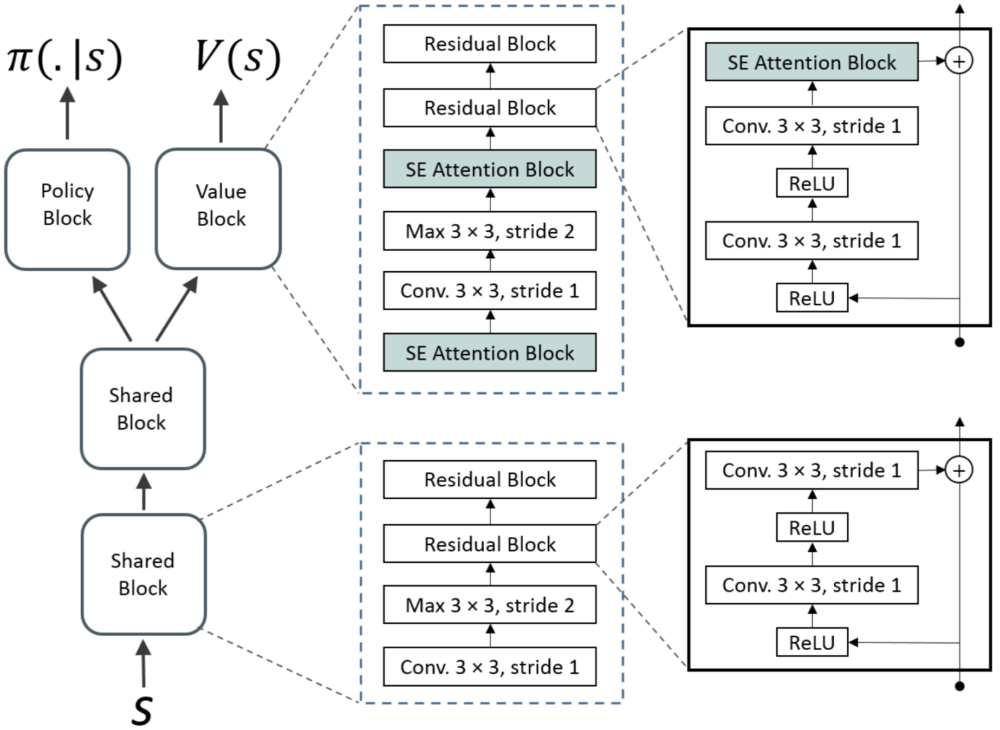

Reward-Guided Online Pruning for LLM Agents
In preparation for ICML 2026. My current work, in which I leverage reward signals to guide LLM agent pruning in MDPs using a novel REINFORCE-inspired pruning objective, extending LLM pruning to the online agentic domain for the first time.
Scaling Web Agent Training through Automatic Data Generation and Fine-grained Evaluation
Featured in COLM 2025. My internship project at LG AI. I developed a novel constraint-based LLM-as-a-judge approach that allowed for highly performant knowledge distillation of LLM agents for automated web browsing.

Efficient Late Interaction Cross-Encoder Model for Reranking
This DistilBERT-based ColBERT candidate generation model achieves top-k recall performance within 10% of the Mind2Web candidate generation baseline, but with 1/20th of the inference time.

Knowledge Distillation to a Reinforcement Learning Network from a Hierarchical GPT-4 Agent using Procedural Data Augmentation
This work develops a hierarchical GPT-4 agent that solves Minigrid tasks zero-shot by verbalizing subgoals, then applies a procedural data augmentation strategy over these subgoals to cheaply generate large amounts of data for imitation learning. This approach enables efficient knowledge distillation from the GPT-4 agent to an RL network to effectively bootstrap policies in sparse reward Minigrid environments.

Fully Online Decision Transformer
This work is the first to adapt the decision transformer architecture to the online reinforcement learning setting. Our hybrid approach, in which an exploration policy in parallel for stability early in training, then increasingly using the decision transformer for exploration as it stabilizes, surpasses state-of-the-art RL algorithms in Mujoco.

Attention-Based Partial Decoupling of Policy and Value for Generalization in RL
Featured in the NeurIPS 2021 Workshop on Deep RL, this work proposes a actor-critic architecture which separates the policy and value functions during training. Our approach generalizes better than state-of-the-art RL methods while using fewer parameters.